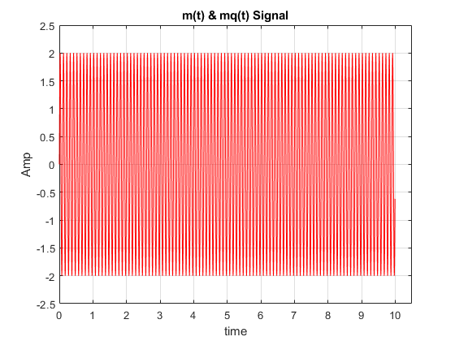
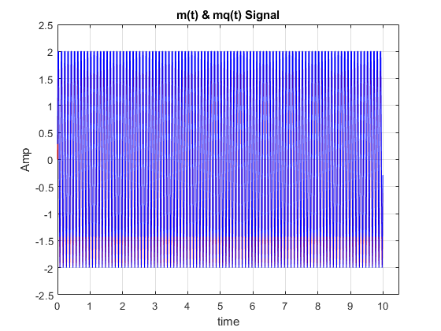
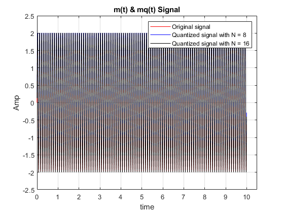

Contents
Hw1 - Q5
Teacher : Dr.Emadi Author: [SeyedAli] - [SeyedHosseini] E-mail: [alishosseini79@aut.ac.ir]
%Student-Number : [9723042] % University: Amirkabir University of Technology
clear recent data
clc;
close all;
clear ;
Initialization
fs = 200 ; %sampling frequency Ts = 1/fs ; %step resolution t = 0 : Ts : 10 - Ts ; %time A = 2 ; %Amp fc = 10 ; %carrier frequency m = A*sin(2*pi*fc.*t); %Original signal
plotting m(t)
clc; figure(1) plot(t,m,'r') hold on; ylabel("Amp") xlabel("time") title("m(t) & mq(t) Signal") grid on; axis([0 10.5 -2.5 2.5])
Quantiziation for N = 8
clc; N = [8 , 16]; %Quantize Levels v = log2(N(1)) ; %Quantize a signal to "v" bits. maxsig = max(m); %signal max interval = 2*maxsig/(N(1)-1); %interval length for 8 levels resolution u = maxsig + interval; %Upper bound of codebook partition = [-maxsig : interval : maxsig]; %Distinct endpoints of different ranges, specified as a row vector codebook = [-maxsig : interval : u]; %Quantization value for each partition [index , mq1] = quantiz(m,partition,codebook); % Quantized Signal
plotting mq(t) for N = 8
figure(1) plot(t,mq1,'b') grid on; axis([0 10.5 -2.5 2.5])
Quantiziation for N = 16
clc; N = [8 , 16]; %Quantize Levels v2 = log2(N(2)) ; %Quantize a signal to "v" bits. maxsig = max(m); %signal max interval = 2*maxsig/(N(2)-1); %interval length for 8 levels resolution u = maxsig + interval; %Upper bound of codebook partition = [-maxsig : interval : maxsig]; %Distinct endpoints of different ranges, specified as a row vector codebook = [-maxsig : interval : u]; %Quantization value for each partition [index , mq2] = quantiz(m,partition,codebook); % Quantized Signal
plotting q(t)
figure(1) plot(t,mq2,'k') legend('Original signal','Quantized signal with N = 8','Quantized signal with N = 16') grid on; axis([0 10.5 -2.5 2.5])
SQNR
clc; L = numel(m) ; %length of signal Pm = sum(m.^2)/L ; %average power % display(Pm) distor1 = m - mq1 ; %distortion vector 1 distor2 = m - mq2 ; %distortion vector 2 Pq1 = sum(distor1.^2)/L ; %average power of Distortion 1 Pq2 = sum(distor2.^2)/L ; %average power of Distortion 1 Sqnr1 = Pm / Pq1 ; %SQNR of First Quantiztation Sqnr2 = Pm / Pq2 ; %SQNR of Second Quantiztation Sqnr1 = pow2db(Sqnr1) ; Sqnr2 = pow2db(Sqnr2) ; fprintf("SQNR of first Quantization is %f db and Second Time is %f db.",Sqnr1,Sqnr2) fprintf("\n So More levels,Better SQNR")
SQNR of first Quantization is 13.818131 db and Second Time is 19.973333 db. So More levels,Better SQNR